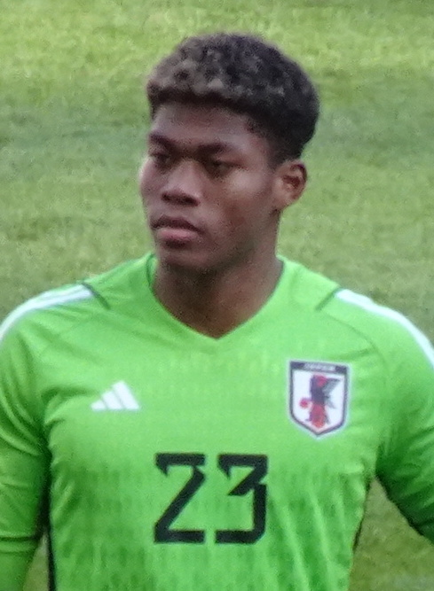
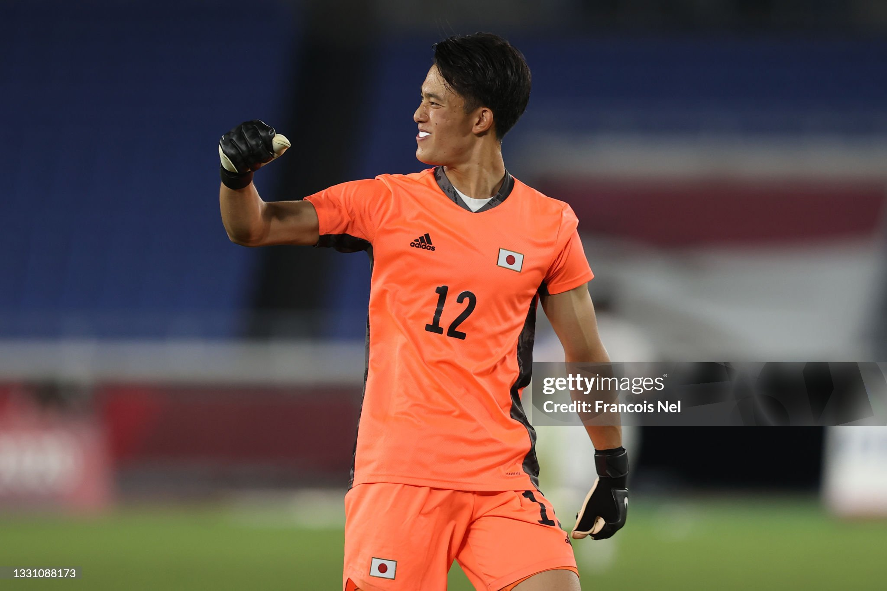
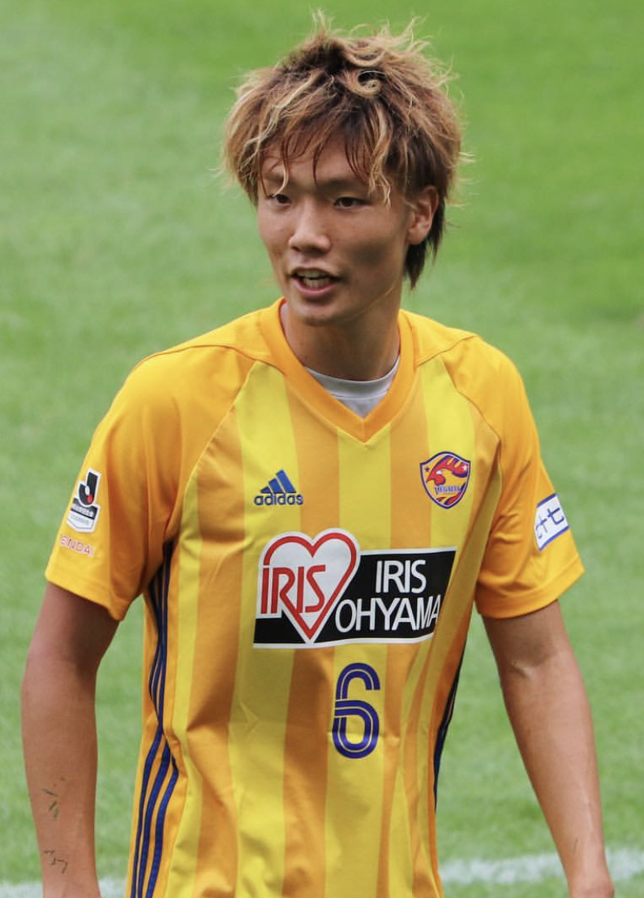
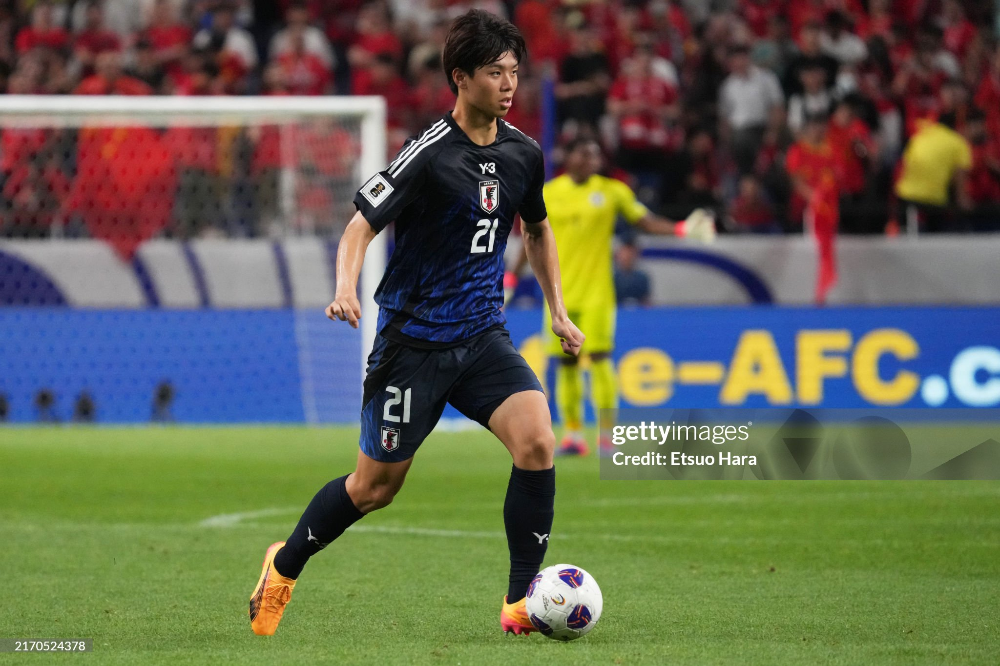
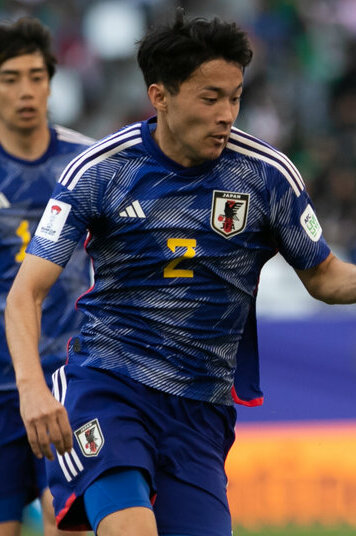
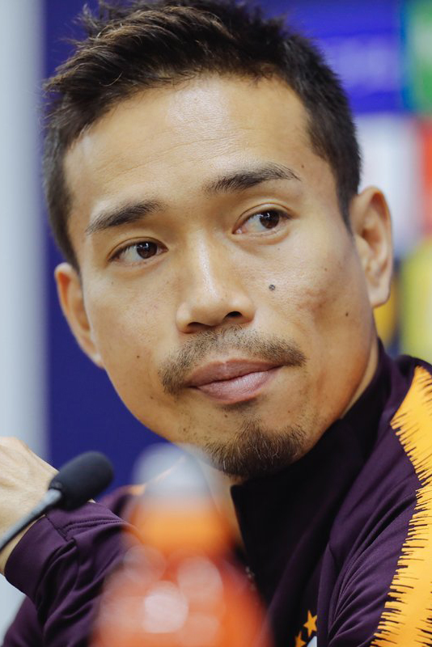
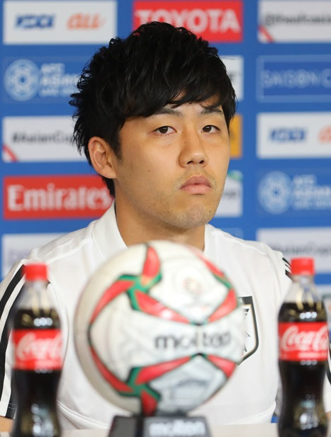
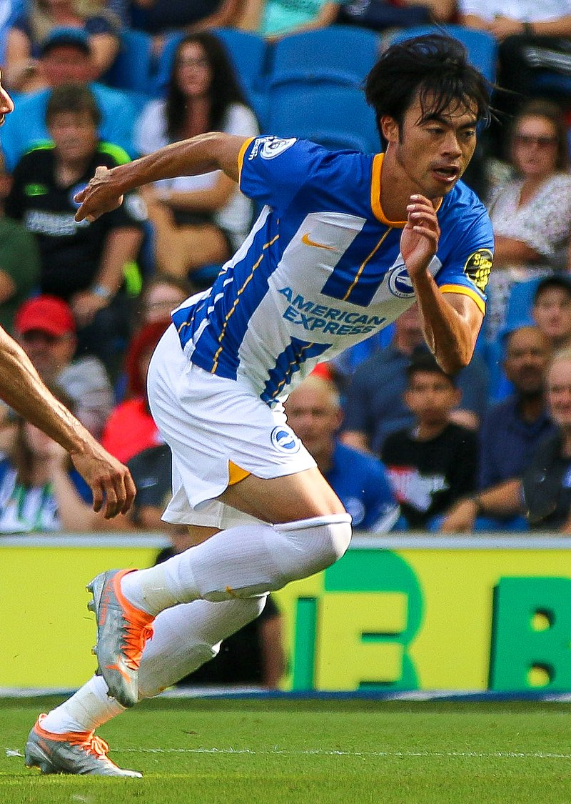
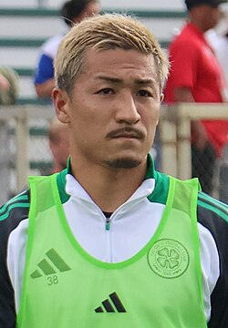

| Nombre | Posición | Edad (2025) | Bibliografía | Portada |
|---|---|---|---|---|
| Zion Suzuki | Portero | 23 |
Portero titular de la selección japonesa y del Parma Calcio en la Serie A. Destacado por sus reflejos y liderazgo bajo los tres palos. |
 |
| Kosei Tani | Portero | 25 |
Portero con experiencia en la J1 League, reconocido por su agilidad y capacidad para detener tiros desde corta y larga distancia. |
 |
| Kō Itakura | Defensa central / Mediocentro defensivo | 28 |
Defensor polivalente del Ajax Ámsterdam, aporta solidez defensiva y salida de balón desde la defensa. |
 |
| Kota Takai | Defensa central | 21 |
Joven talento que juega en Tottenham Hotspur. Reconocido por su velocidad, anticipación y juego aéreo. |
 |
| Yukinari Sugawara | Lateral derecho | 25 |
Lateral ofensivo del Werder Bremen. Capaz de asistir en ataque y mantener solidez defensiva. |
 |
| Yuto Nagatomo | Lateral izquierdo | 39 |
Veterano defensor con amplia experiencia internacional. Juega actualmente en FC Tokyo y aporta liderazgo al equipo. |
 |
| Reo Hatate | Centrocampista | 28 |
Centrocampista dinámico del Celtic FC. Destaca por su visión de juego, pase preciso y llegada al área rival. |
|
| Wataru Endo | Centrocampista defensivo | 32 |
Jugador del Aston Villa. Clave en recuperación de balón y distribución en el mediocampo, aporta estabilidad al equipo. |
 |
| Takefusa Kubo | Extremo derecho | 24 |
Hábil extremo de la Real Sociedad, conocido por su regate, velocidad y capacidad de desequilibrar defensas rivales. |
 |
| Kaoru Mitoma | Extremo izquierdo | 28 |
Extremo del Brighton & Hove Albion. Destacado por su desborde, velocidad y capacidad de generar goles y asistencias. |
 |
| Kyogo Furuhashi | Delantero | 30 |
Delantero del Celtic FC. Conocido por su capacidad goleadora, movimientos inteligentes y definición en el área. |
|
| Daizen Maeda | Delantero | 27 |
Delantero rápido y trabajador del Celtic FC. Destacado por su presión alta, velocidad y capacidad de marcar goles decisivos. |
 |